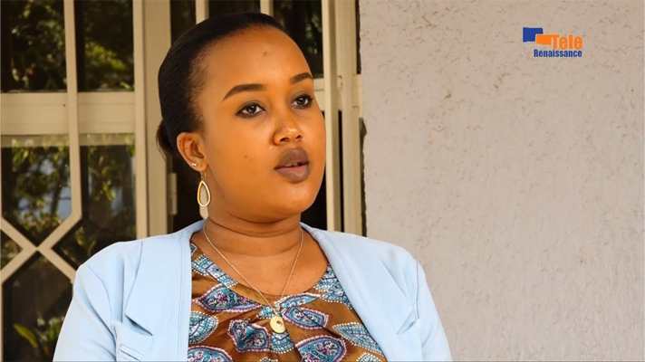
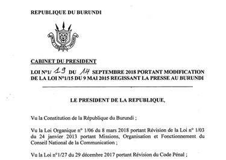
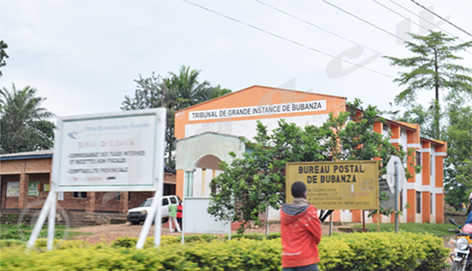
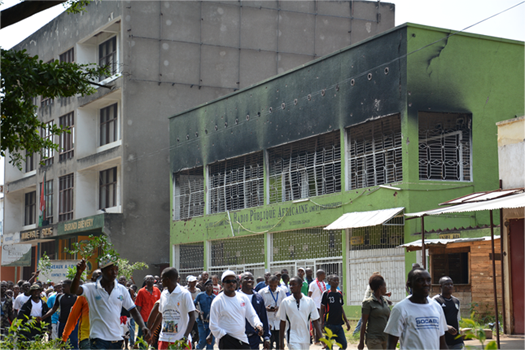

“The population is resigned to the evils of the leaders of Burundi,
citizens do not express themselves for fear of being killed,
we call on Burundians to brave the fear.”
Irangabiye’s statement was made in critique of Burundi’s human rights record on her live radio show during an interview with human rights defense attorney and activist, Janvier Bigirimana, and journalist and director of Radio Publique Africaine, Bob Rugurika - both of whom are exiled from the country.

In Rwanda, where Irangabiye has resided since 2009 , the statement is constitutionally protected by article 38 - which sets the conditions for “exercising and respect for freedom of press, of expression and of access to information.”
Burundi, where she was arrested August 30th during a visit to her family, has Law No. 1/019; better known as the “Press Law”. Human rights defense lawyer and founder of SOS-Torture Burundi, Armel Niyongere, attested, “In its article 21, this law provides, among other things, that freedom of the press is guaranteed in Burundi and that all media have the right to access sources of information.”

Even international human rights laws protect the freedom of expression through the Universal Declaration of Human Rights’ article 19. But none of these legal protections made the difference in this case.
According to the Burundi Human Rights Initiative, during her trial judges said that Irangabiye “didn’t have the right” to interview Rugurika because of an arrest warrant against him. Rugurika was convicted in absentia of state security crimes alongside 33 other people, 12 of which were exiled human rights defenders and journalists, accused of participating in a coup attempt in May of 2015 during the nation’s unrest.

BHRI noted that the court dismissed her lawyer’s arguments pointing out the right to free expression under the constitution of Burundi. The human rights organization reports the court said in its conclusion that the right to free speech did not entitle Irangabiye to call people to rebel against the government or “offend the government and its democratically elected officials.”
Burundi has experienced shifts between democratic systems and authoritarian regimes since gaining independence from Belgium in 1962. The landlocked East African country has a history of ethnic conflicts, civil wars, and coups. The country faces ongoing challenges with political power struggles and corruption impacting its democratic processes.
In 2015, sociopolitical unrest erupted over former President Pierre Nkurunziza’s controversial third-term bid, sparking widespread protests and subsequent violence, with the government targeting journalists and press organizations directly. The unrest led to the exile of many journalists and nongovernmental organizations, overshadowing the country’s efforts to stabilize its democratic foundations and redress past human rights violations.

The ruling-party system in Burundi, currently led by the National Council for the Defense of Democracy – Forces for the Defense of Democracy (CNDD-FDD), has wielded significant influence over the nation’s political landscape, impacting social structures and governance processes.
“Since the 2015 crisis following the third illegal mandate of the late Pierre Nkurunziza decided by the CNDD-FDD party in power since 2005, around a hundred journalists from independent media have taken the path of exile because they were threatened with torture or death,” said Niyongere.
“The public is subject to the dictatorship of the CNDD-FDD party because no one can express themselves or demonstrate freely against the power in place without suffering reprisals.
As an alternative, the public obtains information on social networks and the media run by Burundian journalists from their places of exile because they have the freedom to balance their information and even take a critical look at government action in Burundi in their editorials.”
Before her arrest Irangabiye was a co-founder and radio host of Radio Igicaniro - a Rwandan online outlet established by Burundian exiles and expatriates in 2019. She was also a commercial representative at Engen Rwanda - a gas and energy company - and a single mom of two. She is a “highly motivated woman, reliable and committed to professional achievements” according to her LinkedIn. Outside of her professional life, Irangabiye’s family has reported her to love traditional music and spending time with her family and friends.
Irangabiye’s colleagues and the international journalism community has banned behind the radio host as she appeals the charges against her and fight for her freedom. Many have taken to Twitter to speak out against the injustice of the charges against her and demanding that they be dropped. Other activists have taken to news outlets in surrounding countries and internationally. Even the United Nations Special Rapporteur on Burundi has taken up the matter at the UN convention in Geneva.
Following her arrest by National Intelligence Service (SNR) agents, Irangabiye did not face formal charges until October 27th. In those two months between the arrest and charges, Irangabiye was transferred to the SNR headquarters in the capital of Bujumbura on September 8th after more than a week of interrogation without the presence of a lawyer. She was then transferred to the Central Prison of Mpimba, also located in Bujumbura. The night of September 29th she was taken to Muyinga prison, in northeastern Burundi, far away from her family in Bujumbura.
Throughout these series of transfers, it has been reported that Irangabiye was sexually assaulted by an SNR officer. She also experienced a compromise in her health as her asthma did not adapt well to the humid outdoor environment of Muyinga prison. According to the Committee to Protect Journalists, Irangabiye was exposed to smoke from a nearby kitchen which worsened her condition while in Muyinga prison. She was previously denied access to healthcare outside of the prison, relying solely on the prison doctor’s resources.
Most recently, in January of 2023, Sylvestre Nyandwi, Burundi’s prosecutor general at the time, told CPJ that Irangabiye’s conviction was not politically motivated. On October 29, 2023, Irangabiye spent one night at Mpimba prison and was then transferred to Bubanza prison, almost 25 miles northwest of Bujumbura.
Now, after one failed appeal attempt, her case is up for reconsideration again but this time at the country’s Supreme Court. She now awaits the verdict in Bubanza prison. “The role of human rights organizations is crucial in reining in countries that do not abide by the international law, so innocent journalists such as Floriane Irangabiye — who didn’t do anything wrong other than performing her duties as a journalist — are not kept in prison for another day,” said Tony Nkina, Irangabiye’s attorney, in a statement to Voices of America.